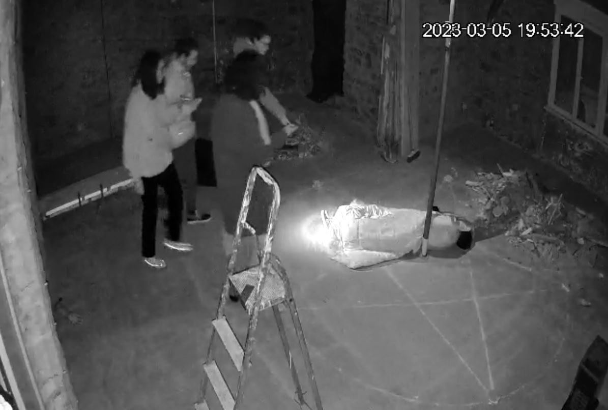
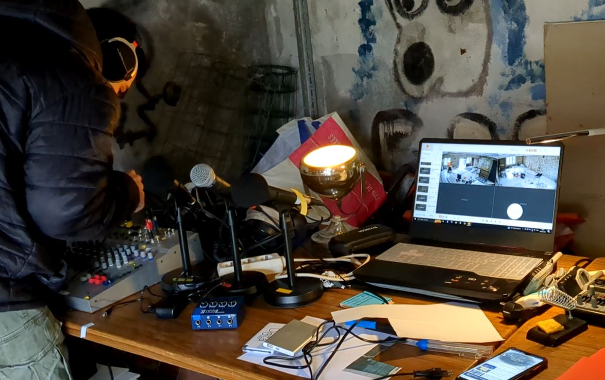

🔐 Le projet
Une maison en travaux et un peu d'imagination. Il n'en fallait pas plus pour qu'un ami, Mathieu Uguen, et moi imaginions à deux un scénario d'escape game d'horreur dans ce décor glaçant. Après plusieurs heures de réflexion, nous avons créé une histoire d'environ 1h30 la plus immersive et cohérente possible. Entre réflexions, mécanismes, recherches (et peur), nous avons pu proposer cette expérience éphémère et personnalisée à nos amis répartis en trois groupes de 3 à 4 joueurs.
🔮 Le synopsis
Alors que vous pensiez aider votre ami en allant fermer la fenêtre qu'il a laissée ouverte derrière lui, vous vous retrouvez enfermés dans sa maison à l'atmosphère étrange. Pourtant banale aux premiers abords, cette maison semble de plus en plus étrange. Traces de sang au plafond, pièces secrètes, signes sataniques... Cet endroit cache quelque chose et une chose est sûre : on vous veut du mal. Le temps presse, il faut sortir vite et avec des preuves de ce qu'il se passe ici avant qu'il ne soit trop tard. Vous ne connaissez peut-être pas si bien vos amis.

🚧 Installation
Pour mener à bien ce projet, nous avons cartographié l'ensemble du scénario et des énigmes avec un organigramme. Pour suivre les joueurs pendant leur aventure et avoir une captation vidéo, nous avions à disposition une régie son et vidéo. En tout, ce sont 8 caméras infrarouges et 4 dictaphones qui ont été installés dans la maison. Nous avions donc une vision globale sur le déroulement de la partie depuis notre régie dédiée.
La partie régie, captation audio et vidéo a été réalisée par Erwan Uguen. Retrouvez-le sur son LinkedIn.

🎥 Les parties en vidéo
Le montage des 3 passages est en cours... Revenez plus tard pour voir le résultat ici !